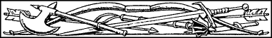
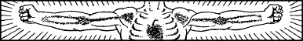
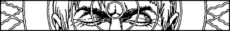
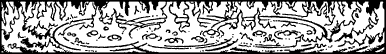

New Order Kai Grand Master Disciplines
Kai and Magnakai Disciplines
During your distinguished rise to the ranks of the New Order of Kai Grand Masters, you have become proficient in all of the basic Kai and Magnakai Disciplines. These Disciplines provide you with a formidable arsenal of natural abilities which will serve you well. A brief summary of your skills is given below:
- Weaponmastery
- You are proficient with all close combat and missile weapons. You are a master of unarmed combat and suffer no COMBAT SKILL loss when fighting bare-handed.
- Animal Control
- You are able to communicate with most animals and have limited control over hostile creatures. You can use woodland animals as guides and you are able to block a non-sentient creature’s sense of taste and smell.
- Curing
- You are able to restore ENDURANCE points lost as a direct result of combat. You may restore 1 ENDURANCE point for every numbered section of the book you pass through in which you are not involved in further combat. The maximum number of ENDURANCE points that can be restored in this way is limited to 10 per adventure.
You also possess the ability to heal the wounds of others, and you can neutralize the harmful effects of most poisons, venoms, and toxins.
- Invisibility
- You can hide effectively in most environments, mask any sounds made during movement, and you can cause minor alterations of your own physical appearance. Also you are able to mask your own body heat and scent.
- Huntmastery
- You are an expert hunter of food in the wild. You possess great physical agility and a keen sense of vision (day and night). Your senses of hearing and smell are especially acute.
- Pathsmanship
- You are able to understand most languages, magical symbols, and hieroglyphics. You are expert at reading footprints and tracks. You have an intuitive knowledge of the compass points and can detect the threat of an enemy ambush up to a distance of 500 yards. You possess an ability to cross terrain without leaving tracks. You can converse with sentient creatures and mask yourself from psychic spells of detection.
- Psi-surge
- You are able to attack enemies using the powers of your mind. Also you can set up disruptive vibrations in inanimate objects and cause confusion in the minds of unsophisticated enemies.
- Psi-screen
- You possess strong mental defences against hypnosis, supernatural illusions, charms, hostile telepathy, and evil spirits. You are able to divert and re-channel some hostile psychic energy to your own ends.
- Nexus
- You can move small items by projection of your mind power. You can withstand extremes of temperature and are able to extinguish fire by force of your will alone. You have a limited immunity to flames, toxic gases, and corrosive liquids.
- Divination
- Your famous Kai Sixth Sense can warn you of imminent danger. You can detect invisible or hidden enemies, and you are able to communicate telepathically. You can recognize magic-using and/or magical creatures, detect psychic residues, and you have a limited ability to leave your corporeal body (‘spirit-walk’) for short periods.
New Order Kai Grand Master Disciplines
After years of martial training and study at the Kai Monastery, and by the rigorous practice of the teachings of your illustrious mentor—Kai Supreme Master Lone Wolf—you have achieved the noble rank of Kai Grand Master Senior.
Following in the footsteps of Lone Wolf himself, you have vowed that one day you will become totally proficient in all 16 of the New Order Kai Grand Master Disciplines. By doing so successfully you will share with Lone Wolf the responsibility, the honour, and the future glory of leading the New Order Kai as a Supreme Master. Upon reaching the ultimate rank of Kai Supreme Master, Lone Wolf received as a reward from God Kai many new skills and abilities, including the powers of Astrology, Herbmastery, Elementalism, and Bardsmanship. He perfected these with the help of his allies in Lyris, Bautar, and Dessi, and established them as new disciplines to be taught to the betterment of the New Order Kai.
If this is the first New Order adventure you have undertaken, then your present rank is that of Kai Grand Master Senior. This means that you have mastered five of the New Order Grand Master Disciplines listed below. It is for you to decide which five Disciplines these are. As all of the New Order Grand Master Disciplines may be of use to you at some point during your mission, pick these five skills with care. The correct use of a New Order Grand Master Discipline at the right time could save your life. When you have chosen your five Disciplines, enter them in the Grand Master Disciplines section of your Action Chart.
Grand Weaponmastery
{kind=link}

This Discipline enables a New Order Grand Master to become supremely efficient in the use of all weapons. When you enter combat armed with one of your Grand Master weapons, you may add 5 points to your COMBAT SKILL. The rank of Kai Grand Master Senior, with which you begin the New Order series, means that you are skilled in the use of one of the weapons listed below.

For every adventure that you complete successfully in the New Order series while possessing the Discipline of Grand Weaponmastery, you will gain proficiency with one additional weapon.
If you have the Discipline of Grand Weaponmastery with Bow, you may add 5 points to any number you pick from the Random Number Table, when using the Bow.
Animal Mastery

New Order Grand Masters have considerable control over hostile, non-sentient creatures. Also, they have the ability to converse with birds and fishes, and use them as guides.
Deliverance (Advanced Curing)
{kind=link}

New Order Grand Masters are able to use their healing power to repair serious battle-wounds. If, while in combat, their ENDURANCE is reduced to 8 points or less, they can draw upon their mastery to restore 20 ENDURANCE points. This emergency ability can only be used once every 20 days.
Assimilance (Advanced Invisibility)

New Order Grand Masters are able to effect striking changes to their physical appearance, and maintain these changes over a period of one to three days. They have also mastered advanced camouflage techniques which make them virtually undetectable in an open landscape.
Grand Huntmastery

New Order Grand Masters are able to see in total darkness and they possess great natural speed and agility. They also have a superb sense of touch and taste. If you have chosen the Discipline of Grand Huntmastery as one of your skills, you will not need to tick off a Meal when instructed to eat.
Grand Pathsmanship
{kind=link}
New Order Grand Masters are able to resist entrapment by hostile plants. Also they have a super-awareness of ambush, or the threat of ambush, in woods and dense forests.
Kai-surge

When using their psychic ability to attack an enemy, New Order Grand Masters may add 8 points to their COMBAT SKILL. For every round in which Kai-surge is used, they need only deduct 1 ENDURANCE point. Grand Masters have the option of using a weaker form of psychic attack called Mindblast. When using this lesser attack, they may add 4 points to their COMBAT SKILL without loss of ENDURANCE points (Kai-surge and Mindblast cannot be used simultaneously). New Order Grand Masters cannot use Kai-surge if their ENDURANCE score falls to 6 points or below.
Kai-screen
{kind=link}

During psychic combat, New Order Grand Masters are able to construct mind-fortresses capable of protecting themselves and others. The strength and capacity of these fortresses increase as a New Order Grand Master advances in rank.
Grand Nexus
{kind=link}

New Order Grand Masters are able to withstand contact with harmful elements, such as flames and acids, for upwards of an hour in duration. This ability increases as a New Order Grand Master advances in rank.
Telegnosis (Advanced Divination)

This Discipline enables a New Order Grand Master to spirit-walk for far greater lengths of time, and with far fewer ill effects. Duration of the spirit-walk and the protection afforded to his inanimate body increase as a New Order Grand Master advances in rank.
Magi-magic (Old Kingdom Magic)

Under the tutelage of Lone Wolf, you have been able to master the rudimentary skills of Old Kingdom battle-magic. These arcane skills include the use of basic Old Kingdom Spells, such as Shield, Power Word, and Invisible Fist. As you advance in rank, so will your knowledge and mastery of Old Kingdom magic increase.
Kai-alchemy (Brotherhood Magic)

Under the tutelage of Lone Wolf and Guildmaster Banedon (the leader of Sommerlund’s Guild of Magicians), you have mastered the elementary spells of the Brotherhood of the Crystal Star. These spells include Lightning Hand, Levitation, and Mind Charm. As you advance in rank, so will your knowledge and mastery of Brotherhood magic increase.
Astrology
{kind=link}
The celestial bodies which occupy the skies above Magnamund have long been known to affect the lives of its inhabitants. Mastery of this Discipline enables a New Order Grand Master to predict and shape the future by studying the relative positions of the Sun, the Moon, and the myriad planets and stars. The number and accuracy of these predictions increase as a New Order Grand Master advances in rank.
Herbmastery
{kind=link}
Mastery of this New Order Discipline enables a Grand Master to identify readily any substance derived from living or growing organic material. He is aware of any secret uses to which an organic material may be put, and he is skilled in effecting the release of a substance’s medicinal and/or magical properties.
Elementalism
{kind=link}
This Discipline enables a New Order Grand Master to manipulate the four basic elements: Earth, Air, Fire, and Water. By drawing upon individual elements that are available, or combinations thereof, he is able to detach, affix, increase, concentrate, intensify, remove, or accelerate this matter to fulfil a specific purpose, e.g. create a wall, hurl a rock, spray sand, remove air, intensify fire. The versatility of this Discipline increases as a New Order Grand Master advances in rank.
Bardsmanship
{kind=link}
Through mastery of this Discipline a Kai Grand Master of the New Order becomes a multi-talented performer, proficient in the use of any musical instrument. He is able to sing or chant, recite or compose tales of legend, mimic speech or dialect, and stimulate a wide range of emotions among sentient creatures. The effect and power of his bardic abilities will steadily increase as he advances through the Grand Master ranks.
If you successfully complete the mission as set in Book 26 of the Lone Wolf New Order series, you may add a further Grand Master Discipline of your choice to your Action Chart in Book 27. For every Grand Master Discipline you possess, in excess of the original five Disciplines you begin with, you may add 1 point to your basic COMBAT SKILL score and 2 points to your basic ENDURANCE points score. These bonus points, together with your extra Grand Master Discipline(s), your original five Grand Master Disciplines, your Kai Weapon, 5 and any other Special Items and Backpack Items that you have found and been able to keep during your adventures, may then be carried over and used in the next New Order adventure, which is called: Vampirium.
Footnotes
[5] Details about the Kai Weapon appear in the next section of the game rules.